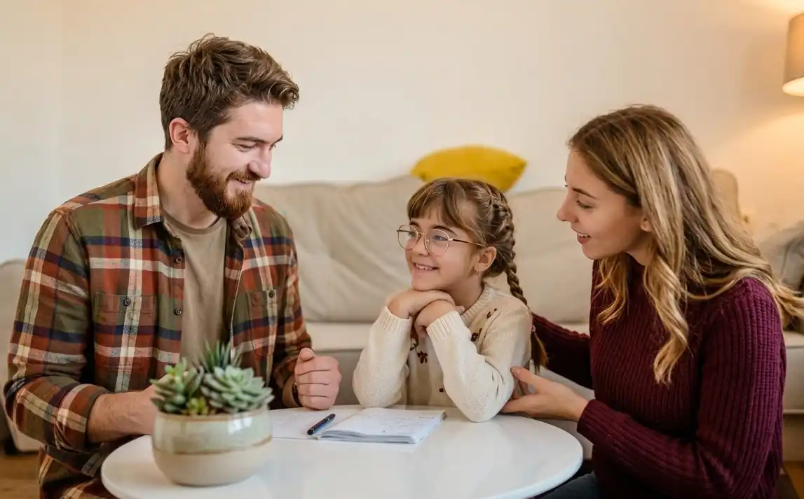

Spazio
Psicologico
Uno spazio di ascolto sicuro e accogliente per affrontare difficoltà emotive e relazionali, promuovendo salute e benessere psicologico.
ApprofondisciUno spazio nato per prendersi cura della persona e del suo benessere, in ogni fase della vita.
Alba è un centro multidisciplinare dedicato al supporto psicologico, educativo e alla promozione del benessere psicofisico. Con percorsi personalizzati per bambini, adolescenti e adulti, il nostro team di professionisti offre risposte concrete e integrate per affrontare le difficoltà e ritrovare equilibrio nella vita di tutti i giorni.
Scopri il centro
Uno spazio di ascolto sicuro e accogliente per affrontare difficoltà emotive e relazionali, promuovendo salute e benessere psicologico.
ApprofondisciFavorisce l'apprendimento, la creatività e lo sviluppo di competenze sociali ed emotive attraverso attività strutturate e laboratori.
ApprofondisciPercorsi per ritrovare equilibrio tra corpo e mente: rilassamento, energia positiva e consapevolezza di sé per uno stile di vita sano.
Approfondisci
Il nostro team è a tua disposizione per consigliarti i servizi e le discipline più adatti alla tua persona. Raccontaci di te: ti guideremo verso il percorso giusto.
ContattaciAlba accoglie bambini, adolescenti, adulti e famiglie, con percorsi pensati per ogni fase della vita. Grazie a un approccio multidisciplinare, il centro propone servizi diversi ma integrati, per rispondere in modo mirato alle esigenze di ciascuno.

Per l'infanzia, Alba propone percorsi personalizzati che sostengono la crescita, l'apprendimento e il benessere emotivo dei più piccoli, in stretta collaborazione con le famiglie.

Per l'adolescenza, percorsi di ascolto, sostegno e crescita pensati per accompagnare ragazze e ragazzi nelle sfide di questa fase della vita.

Per gli adulti, percorsi di sostegno psicologico, genitorialità e benessere psicofisico, costruiti su misura per ogni fase della vita.
Il nostro team è composto da professioniste e professionisti che lavorano in ottica olistica, ognuno con le proprie competenze, uniti dal desiderio di lavorare insieme per il benessere della persona.
L'équipe si confronta sulle esigenze di ciascuno, valuta la situazione nel suo insieme e propone percorsi personalizzati che possono coinvolgere più servizi e figure professionali.
Scopri il team